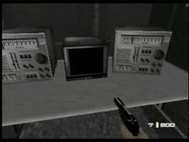
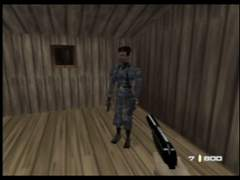

Retour à Surface, mais là il fait nuit, et çà souffle ! Le Ciel est de sang, et y a des Cameras un peu partout.... C'est parti ! Attention, dans ce Niveau, le Gilet Pare-Balles est dans la Barraque du Garde Arctic Commando.
Détruire toutes les Cameras : 00 Agent
Il y en a 4, et elles sont assez espacées. Voilà leur emplacement :
- La Cabane de la 1ere clé de Surface 1.
- La Barraque du Coffre-Fort.
- La Barraque de la Moto Miniature.
- Dans le Radar (Attention, vous arrivez de face devant elle).
Si vous vous laissez voir par une Camera, c'est pas trop trop grave. Y a juste des Arctic Commando qui vont débouler et ils sont quelques peu lourdauds...


Casser la Radio du Radar : Tous Niveaux
Vous vous rappellez l'Ordinateur à éteindre dans Surface 1 ? Ben c'est le meme endroit, sauf que maintenant y a une radio. Pour ouvrir la Porte, il faut aller dans la Cabane ou vous trouviez la 1ere Clé dans Surface 1. Maintenant, la Radio... Ne l'allumez pas ! Cassez tout ! Y a juste besoin d'exploser les Ordinateurs à Gauche et à Droite en fait mais bon c'est plus drole de tout peter.




Détruire l'Helico de la Spetnatz : Secret Agent, 00 Agent
Vous avez sur vous une Mine. Posez-là sur l'Helico qui est juste devant l'Entrée du Bunker. Facile. Attendez bien qu'il ait explosé avant d'entrer dans le Bunker !
Entrer dans le Bunker : Tous Niveaux
L'Entrée officielle est juste à coté de l'Helicoptere explosé.